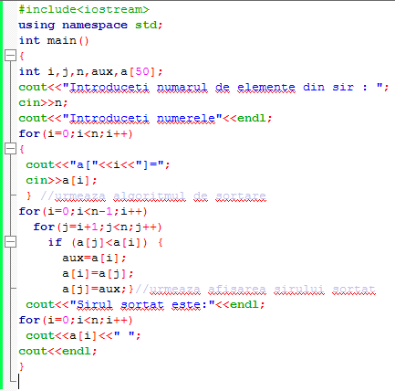
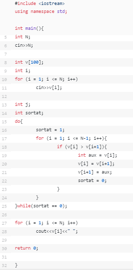
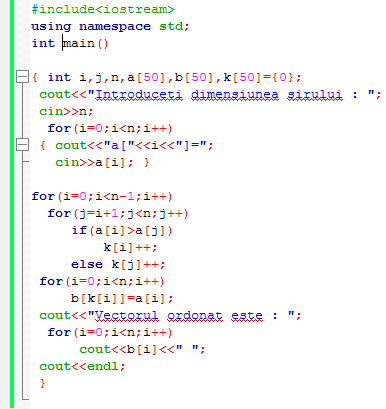

- Interschimbare directa
- Metoda bulelor
- Inserţia directă:
- Sortarea prin numărare
- vectorul sursă (vectorul nesortat) a;
- vectorul destinaţie (vectorul sortat) b;
- vectorul numărător (vectorul de contoare) k.
| Funcţionalitate: Fiecare element al vectorului va juca pe rând rolul unui pivot. Se parcurg pivoţii folosind structura repetitivă for şi la fiecare pas al structurii comparăm pivotul de pe poziţia i cu toate elementele aflate după el. Compararea se va face într-o altă structură for şi pentru fiecare element găsit care e mai mic decât pivotul se realizează interschimbarea. După ce toate elementele au fost pivoţi, vectorul este în întregime sortat. |
Funcţionalitate: Ideea care stă la baza metodei constă în formarea de perechi de elemente succesive. Elementele fiecărei perechi vor fi ordonate crescător, iar prin mai multe parcurgeri ale vectorului se va obţine un şir sortat. După prima parcurgere a vectorului pe ultima poziţie va ajunge elementul care este cel mai mare din tot vectorul. După a două parcurgere pe penultima poziţie va ajunge al doilea cel mai mare element al vectorului, ş.a.m.d. La final vectorul va fi sortat. |
|  |  |
< |
Este cea mai simplă implementare a algoritmului şi se face în felul următor: Se consideră că primele i elemente al vectorului sunt deja sortate. Pentru elementul al (i+1)-lea, din tabloul iniţial, se va găsi poziţia în care trebuie inserat printre primele i elemente. Toate elementele tabloului de la această poziţie şi până la i vor fi deplasate cu o poziţie mai la dreapta iar poziţia eliberată va fi ocupată de elementul i+1. |
| Această metodă necesită spaţiu suplimentar de memorie. Ea foloseşte următorii vectori: Elementele vectorului sursă a[i] se copie în vectorul destinaţie prin înserarea în poziţia corespunzătoare, astfel încât, în vectorul destinaţie să fie respectată relaţia de ordine. Pentru a se cunoaşte poziţia în care se va însera fiecare element, se parcurge vectorul sursă şi se numără în vectorul k, pentru fiecare element a[i], câte elemente au valoarea mai mică decât a lui. Fiecare element al vectorului k este un contor pentru elementul a[i]. Valoarea contorului k[i] pentru elementul a[i] reprezintă câte elemente sunt mai mici decit el şi arată de fapt poziţia în care trebuie copiat în vectorul b.  | |